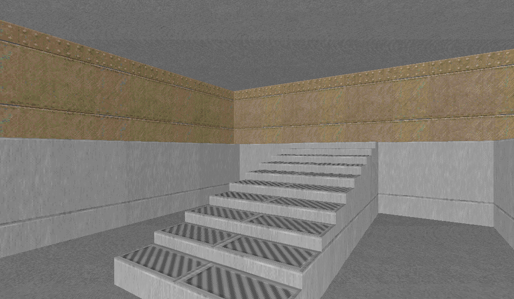
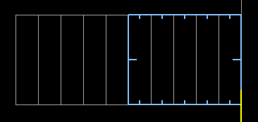

back to the Index | go to next page
Stairs

Layout
Method
- In vertex edit mode, use the RMB to create an outline:
- Now add vertices for the steps in between:
- In sector edit mode, select all the steps. Hold SHIFT to make the selection without moving the room sector:
- Press the raise floor shortcut key . twice
- Using the LMB, deselect the first step:
- Repeat raising the floor and deselecting the next step:

Downloads
stairs.wad
back to the Index | go to next page